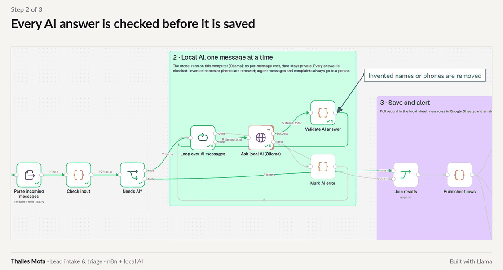

Lead intake and triage with a local AI in n8n: design and an independent test on 40 unseen messages
Thalles Paul Leandro Mota
Abstract. This report describes an n8n workflow for small service businesses that reads each incoming message with an AI model running on the business's own computer, extracts the customer's details, decides what should happen to the message and records it in a spreadsheet, alerting the owner whenever a person needs to act. Fixed rules filter what does not need the AI, every AI answer is checked before it is saved, and the final status is set by rules rather than by the model. On an independent test of 40 messages written by a separate author and sealed before the run, 38 were routed correctly (95%), no urgent message was handled automatically, and names, phone numbers and locations were extracted correctly in all 30 cases each.
My role: requirements, design, build and independent evaluation. Tools: n8n · Ollama · Llama 3.2 3B · JavaScript · Google Sheets. Code: private; live demonstration on request.
1. Why I built it
This one came straight from job posts. Small service businesses kept asking for the same thing: a way to stop losing leads in a crowded inbox. A plumber or a cleaning company gets quote requests, urgent jobs, complaints, questions, automatic replies and spam all mixed together, and someone has to read every message, copy the name and phone number and decide what comes first. An AI can do the reading, but left alone it may invent a phone number or file an emergency as routine. I wanted a workflow where the AI does the tedious part and never has the last word.
2. How it works
Before any AI is involved, simple rules clear out what does not need it: empty messages, automatic replies, "no-reply" senders, texts too short to mean anything, and exact duplicates. Each of these is still logged with the reason, so nothing disappears without a trace.
The remaining messages go to a model running on the same computer, one at a time, and it fills a fixed form: what the person wants, whether it is urgent, name, phone, service, location, deadline and budget. Then code checks the form. A phone number only counts if it actually appears in the message, and a name only counts if it appears in the message or in the sender's name; anything else is removed and the message goes to a person.
The final status comes from rules, in a fixed order. Spam is discarded. Urgent jobs, complaints, requests missing the service, and anything that looked invented go to a person, with an alert to the owner. Everything else is handled automatically. Every message becomes exactly one row in the spreadsheet, and if the AI is down the message waits with an error status instead of being lost.

3. How it was tested
Independent agents wrote and reviewed 40 test messages without seeing the code, the prompt or any result, and I did not read them before the run. The mix was realistic: complete requests and requests missing details, questions, urgent jobs, complaints, spam and scams, automatic replies, duplicates and one malformed input. The model was chosen and recorded beforehand, and the test ran once.
4. Results
38 of the 40 messages got the right status (95%; interval 83 to 99%). Both mistakes leaned to the safe side: a scam with a 24-hour deadline was read as a complaint and sent to a person instead of the bin, and a meaningless test message made the AI invent a name, which the check caught. No urgent message ended up in the automatic pile, and no request that needed a person was lost. Urgency, name, phone and location were right in 30 of 30 cases each.
I also ran a model almost three times larger, Llama 3.1 with 8 billion parameters. It got 36 of 40, let one vague request slip into the automatic pile, and took 145 seconds for the batch against 54. I kept the small one.

5. What this means in practice
For the owner, new leads arrive in a spreadsheet with the details already filled in, and only the messages that need a person reach them, each one flagged. Because the AI runs on the business's own machine, messages are not sent to an AI company and there is no fee per message. For a real client, the workflow is plugged into their own inbox, form or text messages, and tested again on a sample of their real messages before it goes live.
6. Limitations
Forty messages written by an independent AI agent is a small test, so the interval is wide. In the demo, messages arrive through a local web address and alerts are written to a file; in a real setup they come from the client's channel and alerts go by e-mail or Slack. The workflow does not reply to customers on its own. Built with Llama.